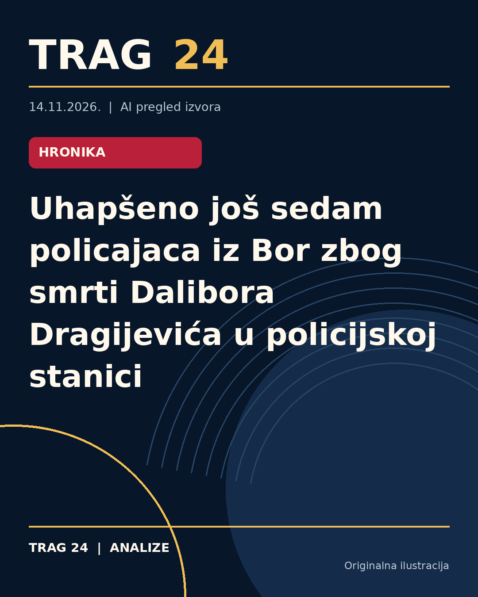

Uhapšeno još sedam policajaca iz Bor zbog smrti Dalibora Dragijevića u policijskoj stanici

ŠTA SE DOGODILO
Sedmoro policajaca iz Policijske uprave Bor uhapšeno je zbog sumnji u vezama sa smrću Dalibora Dragijevića koji je, nakon privodjenja u okviru istrage o nestanku dvogodišnje Danke Ilić, preminuo u policijskoj stanici. Dragijević je bio brat prvookrivljenog Dejana Dragijevića. Prethodno su u toku aprila uhapšeni i sadašnji i bivši pripadnici Uprave kriminalističke policije (UKP) iz Beograda koji su pomogli u istrazi u Boru.
HRONOLOGIJA
Danka Ilić nestala je 26. marta 2024. godine iz mesta Banjskо Polje kod Bora. Nakon višednevne potrage i istrage, dvojica radnika JKP "Vodovod" Srđan Janković i Dejan Dragijević su 4. aprila priznali ubistvo, da bi kasnije negirali prvobitna priznanja tvrdeći da su mučeni. Osam policajaca UKP uhapšeno je ranije ovog meseca zbog sumnje u zloupotrebu u slučaju smrti Dalibora Dragijevića koji je priveden i tokom ispitivanja je preminuo 7. aprila, dan nakon hapšenja, usled prijavljenih kardiovaskularnih problema. Sedmoro policajaca iz PU Bor uhapšeni su po nalogu Višeg javnog tužilaštva u Nišu u poslednjoj akciji Sektora unutrašnje kontrole MUP.
ŠTA NAVODE IZVORI
Svi izvori navode da je Dalibor Drabijević uhapšen i da je preminuo u policijskoj stanici nakon ispitivanja dok su ga policajci tukli. Pokazuju se razlike u detaljima, ali se slažu da je pre smrti zadobio brojne povrede. Izveštaji ukazuju na sumnju u zloupotrebu službenog položaja i na moguće prikrivanje činjenica od strane policijskih službenika. Takođe se navodi da je inspektor Darko Bogdanović, koji je bio u istrazi nestanka Danke Ilić, ranije optuživan za policijsku brutalnost.
ŠTA JE POTVRĐENO
Potvrđeno je hapšenje sedam policajaca iz PU Bor, kao i osam pripadnika UKP-a zbog povezanosti sa slučajem smrti Dalibora Dragijevića. Iz autopsije je jasno da je Dalibor Dragijević preminuo usled povreda dobijenih tokom policijskog ispitivanja. Danka Ilić je zvanično prijavljena kao nestala 26. marta 2024, a za njeno ubistvo su okrivljeni Dejan Dragijević i Srđan Janković, čije su tvrdnje o odgovornosti kontradiktorne.
ŠTA NIJE POTVRĐENO
Nije pronađeno telo nestale Danke Ilić niti njena odeća uprkos potragama i ispitivanjima. Nije potvrđeno da li su svi uhapšeni policajci direktno učestvovali u zlostavljanju Dragijevića ili da li postoje drugi osumnjičeni. Detalji o postupcima Sektora unutrašnje kontrole MUP-a vezanim za naredbe tužilaštva nisu u potpunosti poznati.
ŠTA OSTАJE OTVORENO: Ostaje nejasno gde se trenutno nalazi telo Danke Ilić, kao i konačni ishod istrage protiv svih uhapšenih policajaca. Takođe nije poznato da li će istraga obuhvatiti širi krug odgovornih unutar MUP-a. Takođe je neizvesno da li će se utvrditi okolnosti i odgovornosti za navode o policijskoj brutalnosti u slučaju istraživanja nestanka Danke Ilić.
Izvori
- https://www.danas.rs/vesti/drustvo/nova-rs-uhapseno-jos-sedam-policajaca-iz-pu-bor-zbog-smrti-dalibora-dragijevica/
- https://n1info.rs/vesti/novars-jos-sedmorica-policajaca-iz-bora-uhapsena/
- https://nova.rs/vesti/hronika/saznajemo-uhapseno-jos-sedam-policajaca-iz-pu-bor-zbog-smrti-dalibora-dragijevica/
Ova analiza je pripremljena uz pomoć veštačke inteligencije na osnovu javno dostupnih izvora. Navodi izvora nisu nužno nezavisno potvrđeni.